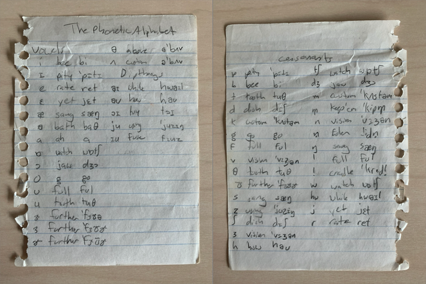

On this day, ten years ago, I decided to major in linguistics. Today, I’m an assistant professor. To celebrate this decade of linguistics, I thought I’d write a little bit about where I came from and how I came to the decision to go into linguistics.
Music
Growing up, I was a total band geek. I’ll spare you the details, but I took piano lessons when I was eight, started saxophone in 6th grade band, hopped around to pretty much all the instruments I could for a few years, and finally settled on bass trombone junior year of high school. I wasn’t bad either: I made the district band most years (on trombone plus a couple other instruments) and even the Missouri All-State band my senior year.
When I started my freshman year at BYU, I auditioned to get into the Brass Performance major, but I didn’t get accepted. So I was officially a “pre-music major”, or rather, the “I-haven’t-realized-I’m-not-cut-out-for-this-yet major.” That gave me a year to knock out most of my general education courses though, which was nice.
I had a fun music hobby though. I’d find movie scores or other songs from the library and I’d arrange them for piano ensembles (like a six-person, two-piano arrangement of a piece from Star Wars). I had been doing that since high school, and BYU seems to have a disproportionate number of people who can play piano, so it was a cinch to find a handful of good sight-readers to play with me. So at the recommendation of a music faculty member I met with one time, I auditioned a second time for the music school, but this time it was to be a Media Music Studies major. And I was accepted!
But, I was 19 years old, and the important thing to do was to go on a full-time, two-year mission. So I took time off from school, knowing my spot in the music school would be waiting for me. I’m so grateful for this break though because without it I would have just barreled through my music major. But the time off gave me the chance to stop and figure out what I was doing with my life.
Early signs that I wanted to be a linguist
Until May 2008, linguistics was not on my radar at all. Like, I didn’t even know what it was. I didn’t even take any foreign language courses in high school.
There were a few signs though. The one I remember most was from when I was in a play my freshman year of high school. I didn’t have a big role, so I had to kill a lot of time in the drama room while the others rehearsed. I was flipping through one of the textbooks and I saw this chart with what’s called the International Phonetic Alphabet. My brother, who had taken a couple theater classes, had mentioned the IPA to me a few years prior. He described it as basically if you can transcribe it well and read it well, you can use it to, in theory, speak in any accent. I remember thinking it was so cool so I copied down all the symbols from that book.

Anyway, it was in May of 2008 that I got the call that I’d be a missionary in Brazil. Meaning I’d have to learn Portuguese. Even though I would be spending the first two months of my mission in an intensive language school, I went ahead and tried learning as much as I could beforehand. And it was then that I realized that learning languages was pretty cool! I finally saw the IPA in action, and was able to use it to learn the sounds. But I remember it blew my mind that, for hundreds of millions of people, “house blue” sounds totally normal and “blue house” sounds totally wrong. Blew. My. Mind.
So even before I had left for my mission, I had already been thinking about linguistics. I had even added to my Facebook profile was that I was considering a minor in linguistics. So, getting called to a foreign mission is what put linguistics on my radar for sure.
My time in Brazil
So I went to Brazil and served my mission. While I was down there, I really enjoyed learning Portuguese. I practiced vocabulary like crazy and studied as much grammar as I could. Some of the other missionaries joked that if anyone needed to talk to a lawyer about the gospel that they should call Elder Stanley because he’s the only one that could understand him. After a year and a half or so, I could convince people that I was Brazilian (my darker complexion helped there)—not a local Brazilian, mind you, but I’d tell them I was from another part of the country. I would get phone calls from other missionaries—native Portuguese-speaking Brazilians!—asking about some nuanced aspect of grammar. It was fun.
You may know that Mormon missionaries have pretty strict rules about what they can and can’t do. At the time, the internet was completely off-limits except to email our parents once a week. Well, I would occasionally sneak on to Wikipedia and look up linguistics pages and print them out and stuff. Of all the ways to rebel, I think looking up IPA symbols was a pretty tame way to do so.
At one point, I was in a city relatively close to Paraguay and would occasionally run into Guaraní speakers. I wrote to my parents about the language, and my dad sent me a Guaraní translation of the Book of Mormon and encouraged me to learn as much of the language as I could. I also met someone who had what was basically a “Teach Yourself Guaraní” textbook (written in Spanish, so I had to quickly learn to read some basic Spanish) so I used that to learn some of the morphology. So in the little free time I had, I spent it trying to learn Guaraní.
Towards the end of my mission, I served in a college town and my companion and I went to the university’s bookstore. I bought a Portuguese Phonetics and Phonology textbook and really had fun reading that. I learned about minimal pairs and basic phonological distributions, and I especially enjoyed reading the dialectal variation that it mentioned. During my last month or so, I bought a comprehensive grammar book, one that was written entirely in Portuguese and was meant for Brazilian university students. In fact, my mission president saw me reading it one time and he’s like, “Elder Stanley, aren’t you going home in like three weeks? Why are you reading that?” Why not? It was fascinating!
Realizing music wasn’t for me
October–December 2010
I got home from my mission in October so I had a few months before the next semester of school started. My plans hadn’t changed yet: I wanted to be the next John Williams so my mind was set on Media Music Studies. But I knew I also wanted to at least minor in linguistics, if not double-major.
Because I was starting in January, I couldn’t start all the the theory and other core classes with the other first-year students because those were only offered in the fall. So I had to sort of fill my semester with fluff. I was able to sign up for the Songwriting class though, which was kinda like the intro to the Media Music Studies major. And since I had a time slot available, I went ahead and signed up for Intro to Linguistics. I also signed up for Acoustics for Music and Speech, band, a non-audition choir, and private bass trombone lessons. So about as much music as I could do without those core classes.
My family visited Utah soon after I got back so I took the opportunity to meet with a linguistics advisor, just to see what classes they’d recommend. It was Alan Melby that I met with, and he recommended I minor in Linguistics Computing. I thought that was a pretty good idea, so I went ahead and signed up for an Intro to Linguistic Computing class as well.
In the meantime, I worked for my dad and spent my free time getting the right equipment and software for my music studies. But I also spent a lot of time studying linguistics. Mostly looking at Wikipedia and other resources online, including lectures that I could listen to while driving. So even though I didn’t know linguistics would eventually be my major (and career), I was already investing a lot of time into learning it and had a decent grasp of a lot of basic topics.
Wednesday, January 5th, 2011
First week of classes comes and I walk into my songwriting class full of confidence. This was going to be the first day of the rest of my life![Although, as my brothers point out, this is technically true every day :)] That class turned out to be a pivotal moment like I had anticipated, it just wasn’t quite pivotal moment I was expecting.
After going over the syllabus, we learn that the final project was going to be to write and record a pop song. Uh-oh. I don’t listen to pop music. We got a homework assignment that day too: submit the names of three pop artists you think most closely resemble your own style of music. Ummm… what? I was there to learn to write movie music, not learn about pop singers. I had just barely gotten back to the country, so I literally couldn’t even name three artists on the radio![I’d struggle with that today, to be fair.] Pop music wasn’t my thing. But the assignment had to be pop music.
Funnily enough, my Intro to Linguistics class was right after that. And I freaking loved it. I wrote in my journal that night that I was already considering changing majors. I think I had known for a long time—really deep down—that I wasn’t cut out for music. This experience in my Songwriting class was just what I needed to come to that realization.
Thursday, January 6th, 2011
The next day, I wrote to my songwriting professor expressing my concern. He said something along the lines of this: “Too bad. I accepted you into this major as a favor to a friend. The odds of you making it as a film score composer are basically zero. Either you expand your horizons or you’re not getting anywhere in the music world. Pop music is where the jobs are so if you can’t keep up, you’re in the wrong major.”
Ouch.
Since middle school, I’d thought of nothing but music and for two years in Brazil, I eagerly anticipated the day when I’d finally start my music classes. And literally in the first hour of the first one, I get a slap in the face, a reality check, and a rude awakening to the fact that I was not going to have a career in music. What was my life for then? Was all that music a waste?
Switching to linguistics
Friday, January 7th, 2011
I spent several hours that evening looking through classes and figuring out what I was going to do. I considered switching to just a general Music major, but now that the rose-colored glasses were off, it occurred to me that the classes that looked the most fun (like orchestration and score analysis) were only possible after three or four long years of coursework that was not very fun-sounding. I’d have to slog through years of alone time in the practice room and classes I didn’t want to take just to finally get to those fun ones at the very end.
Meanwhile, after taking a closer look at the courses in the linguistics major, I realized that they all sounded really fun! Phonetics? Phonology? Morphology? Sociolinguistics? Language documentation? Sign me up!
Saturday, January 8th, 2011
At this point, I was learning towards a double major in (general) music and linguistics, but I was weighing my options. To help me out, I made some charts to see how my semesters would be spent, credit-hour wise. According to my journal, 65% of my time would be spent in music classes. I had already decided my career wouldn’t be in music at that point, so that’d be a lot of time spent doing something that wasn’t going to lead me anywhere.
So at that point, the decision was clear. If all these music classes sounded lame and all the linguistics classes sounded fun, what was stopping me from switching to linguistics?
Sunday, January 9th, 2011
My parents have always been extremely supportive of everything I do. They were in the loop on all the developments up to that point, but that afternoon, I Skyped with them to hash a few things out. As expected, they were just as shocked as I was that I was considering switching, but still extremely supportive.
I don’t recall exactly how it all went down, but I know that by the end of that conversation with my parents, my mind was made up: I was going to major in linguistics and minor in linguistics computing.
It’s pretty interesting what my future plans were at that time. I had these grand plans of learning lots of languages (Mandarin, Arabic, and potentially Hebrew), minoring in TESOL, and teaching abroad somewhere. I was already considering a Master’s program (probably based on conversations with my Intro to Linguistics professor). None of that really panned out, but at that point, a PhD and academia were not in the picture.
I thought it was interesting that I wrote in my journal how much I was looking forward to the Varieties of English class. When I did finally take it a couple semesters later, I was stoked (and it did not disappoint)! Little did I know I’d grow up to be a dialectologist and that I’d be teaching that very course in 10 years’ time. In fact, I taught it in the very same classroom where my Intro to Linguistics class was!
So, at 11:00 on Wednesday the 5th, I was still confident that I’d be a music major. By the evening of Sunday the 9th, I had made up my mind to major in linguistics and was emotionally ready to abandon music studies. It was a tough five days, but that’s all it took. I don’t regret doing music or being in band or learning trombone at all. I still get opportunities to play piano (I’m playing church this Sunday) and I’m still doing arrangements of movie music (I’m working on Jurassic Park right now). But I am soooo glad I didn’t major in it.
Starting linguistics
I met with a humanities advisor a few days later and showed her my pie charts and she basically said she had nothing to say because it’s clear my mind was made up already. I don’t know when I officially made the switch according to the university systems, but it must not have been much later because soon after that I was calling myself a linguistics major in my journal.
The advisor also recommended I do a study abroad. So the next day, I was looking through potential study abroad programs and found one that went to Ecuador to study Pastaza Kichwa with Dr. Janis Nuckolls. I’ve told Janis this sense then, but that study abroad was what set me into motion to get a PhD and ultimately go into academia. Being there in the field doing rigorous linguistic documentation was a total blast.
Later, she invited me to join her research team, which ultimately led me to a presentation at SSILA and attending my first LSA conference in Boston in 2013. I attended as many sessions as I could, including many in the American Dialect Society meetings. And that’s when I caught the bug. I knew then that I had to do my own research go to more conferences. I had already applied to grad schools at that point, but it was that conference that gave me the determination to present at conferences my first year of grad school (and many times since then).
I’m a little fuzzy on the details about deciding to do a PhD and figuring out what my research focus would be. I know I mentioned to my mission president during my closing interview with him that I was considering a PhD, but it didn’t seem like it was on my radar when I switched to linguistics. I did apply to PhD programs though so it must have been that study abroad that sent me that direction. As far as my research focus, I started off wanted to do language documentation, but at some point I decided on sociolinguistics and, more specifically, dialectology. I’ll have to continue reading my journal and seeing if I can pinpoint exact dates for those too.
Conclusion
So that’s it. Ten years ago today is when I decided to major in linguistics. After one difficult homework assignment (that I never finished by the way) and a strongly worded reality check from a professor, it took just five days to abandon the previous decade’s worth of plans to major in music. I look forward to another decade of linguistics and to see where this career will take me!